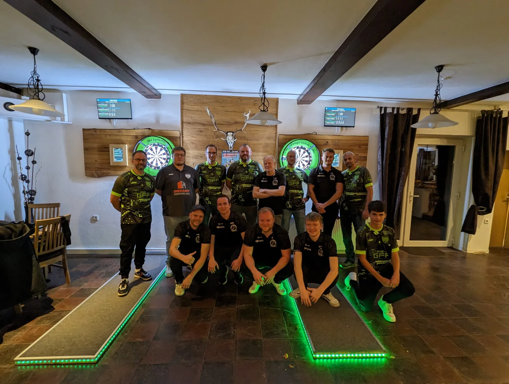

DC
DC Ein Pfeilwurf Richtung Triumph: DC Torpedo segelt zum Sieg gegen Aschendorf

In der Welt des Darts sind Präzision, Konzentration und Teamgeist unerlässliche Zutaten für den Erfolg. Am vergangenen Wochenende haben wir alle diese Elemente und noch mehr auf dem Spielfeld erlebt, als der Dart Club DC Torpedo sich in einem atemraubenden Match gegen Aschendorf durchsetzte. Mit einem Endstand von 7 zu 5 zugunsten von DC Torpedo, war es ein knapper Sieg, der bis zur letzten Minute für Nervenkitzel sorgte.
Die Atmosphäre war elektrisch, als sich die Pfeile ihren Weg zur Zielscheibe bahnten. Jeder Wurf zählte, und die Anspannung in der Luft konnte man fast greifen. Doch trotz des Wettkampfgeistes blieb die Stimmung freundlich und sportlich. Lachen und Jubel erfüllten den Raum, und man konnte leicht erkennen, dass alle Beteiligten, ob Spieler oder Zuschauer, eine großartige Zeit hatten.
Besonders hervorzuheben ist die beeindruckende Performance beider Teams, die bis zum Schluss um jeden Punkt kämpften. Das Spiel war ein wahres Schauspiel des Könnens und der Entschlossenheit, das uns alle an den Rändern unserer Sitze hielt.
Aber kein Event wäre komplett ohne die unermüdliche Arbeit derjenigen im Hintergrund. Ein riesiges Dankeschön geht an das Personal, das für die Bewirtung zuständig war. Die köstlichen Snacks und erfrischenden Getränke, die serviert wurden, sorgten dafür, dass sich alle wohl und willkommen fühlten. Es ist die Gastfreundschaft und Gemeinschaft, die solche Veranstaltungen wirklich unvergesslich machen.
Dieser Sieg von DC Torpedo ist nicht nur ein Zeugnis für das Talent und die harte Arbeit, die in die Vorbereitung gegangen sind, sondern auch ein Beweis für den Geist des fairen Wettbewerbs und der Kameradschaft, der in der Dart-Gemeinschaft lebt. Es sind Momente wie diese, die die Essenz des Sports einfangen und uns alle motivieren, mit Leidenschaft und Entschlossenheit weiterzumachen.
Wir freuen uns schon auf die nächsten Begegnungen und die Möglichkeit, die freundschaftlichen Bande zwischen den Clubs weiter zu stärken. Bis zum nächsten Mal, mögen die Pfeile immer ins Schwarze treffen!